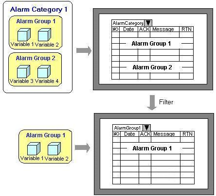
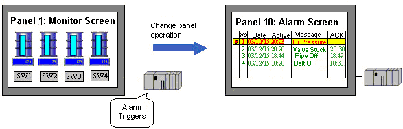
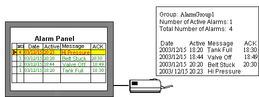

|
|
|
|
|
|
|
|
You can group your alarms and events so that urgent alarms appear in one alarm summary, ordinary alarms appear in another alarm summary, and events appear in an event summary. See Section 16.3.1.2, Displaying Multiple Groups.
Using alarm categories, you can display multiple alarm groups. Then you can filter your alarm messages by individual alarm groups or by alarm category.

This feature is for alarms only. In an alarm summary, you can monitor word addresses (integer and REAL) and trigger alarms when their values reach a specified value. See Section 16.3.3, Word Alarms.

This feature is for alarms only. Set up actions for each alarm, such as changing panels or displaying pop-up windows. These actions can be set up to either run when an alarm is triggered or when the alarm is selected in the summary. See Section 16.3.4, Setting Up Alarm Actions.
You can set up operations such as e-mail, popup windows, scripts, etc., to alert users to alarm conditions. For more information on setting up operations to run on specific alarm conditions, see Section 9.4.1, Actions Wizard.

Users can print alarm and event messages to a printer connected to the target machine. There are two methods of printing: Real Time and Batch. See Section 16.3.5, Printing Alarm and Event Messages.

You can log alarm and event messages to a .csv file on the Secondary Drive. See Section 16.3.6, Outputting Alarms and Events to a .CSV File.

You can insert dynamic content into alarm messages to record variable values when alarms occur. See Section 16.3.8, Setting Up Dynamic Messages in Alarms.